← Portfolio
State of the Art
TENT debate series, sketches and texts from the CC Main Archive folder "25_Tent_Rotterdam/58_TENT_debate/sketches/Web". 11 images.
Dinsdag 5 juli
20.00u in TENT
State of the Art
De visie van
Rein Wolfs
Wat is het toekomstperspectief voor de kunsten in Rotterdam? Victor Vroegindeweij spreekt met Rein Wolfs. De artistiek directeur van de Kunsthalle Fridericianum in Kassel beschouwt zichzelf als politiek gemotiveerd curator. Wat zijn Wolfs ideeën over de verhouding tussen kunst en politiek? En hoe kijkt hij buiten de landsgrenzen naar de Nederlandse en Rotterdamse kunstwereld? De avond wordt opgeluisterd door diverse shout outs en onze vaste columnist Ernest van der Kwast spreek live vanuit Italië een column uit.
Tekst voor beeld door VosBrenner
Dinsdag 29 september
20.00u in TENT
State of the Art
De visie van
Rutger Wolfson
Victor Vroegindeweij spreekt met Rutger Wolfson. De directeur van International Film Festival Rotterdam gaat in op de reputatie van Rotterdam in het internationale kunst- en cultuurcircuit. Hoe kijkt hij aan tegen de huidige rol van de kunsten voor Rotterdam en wat is volgens Wolfson een goed toekomstperspectief? Wolfson was eerder curator bij Witte de With, directeur van De Vleeshal in Middelburg en publiceerde de essaybundels Kunst in crisis (2003) en Het museum als plek voor ideeën (2007). De avond wordt opgeluisterd door shout outs van o.a. DE MAKERS VAN en onze vaste gast Ernest van der Kwast spreekt live vanuit Italië zijn column uit.
Tekst voor beeld
Donderdag 3 november
20.00u in TENT
State of the Art
De visie van
ZUS
NIEUW
Elma van Boxel en Kristian Koreman van ZUS [Zones Urbaines Sensibles] geven hun visie op de toekomst van kunst en cultuur in Rotterdam. Victor Vroegindeweij ondervraagt de twee architecten over hun ervaringen met het Schieblock, het Guggenheim Lab en de komende Internationale Architectuur Biënnale Rotterdam. De avond wordt opgeluisterd door shout-outs, onze vaste columnist Ernest van der Kwast en een YouTube-testimonial van Ina Klaassen.
OUDE VERSIE /OLD VERSION
Op donderdagavond 3 november geven Elma van Boxel en Kristian Koreman van ZUS [Zones Urbaines Sensibles] in TENT hun visie op de toekomst voor kunst en cultuur in Rotterdam. Bureau ZUS is o.a. initiatiefnemer van de transformatie van het Schieblock in een stadslaboratorium. Hoe figureren in hun ideeën over alternatieve benadering van de stad, de culturele voorzieningen? ZUS wordt geïnterviewd door Victor Vroegindeweij. Daarnaast draagt onze vaste columnist Ernest van der Kwast een Skype-column voor en wordt de YouTube-testimonial van Ina Klaassen vertoond.
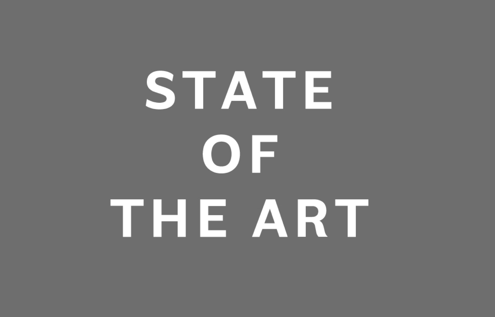
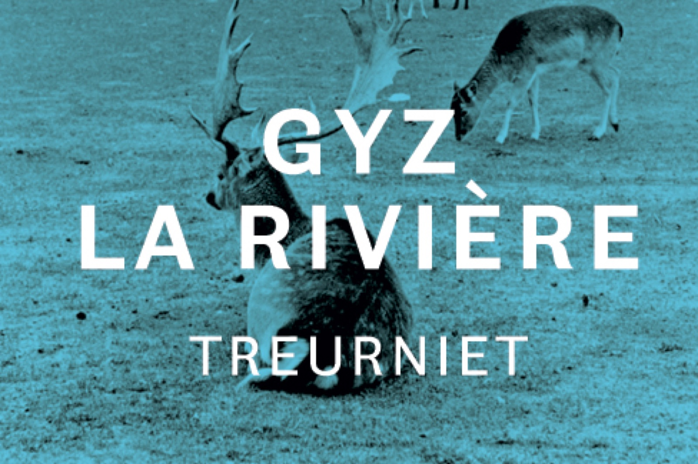
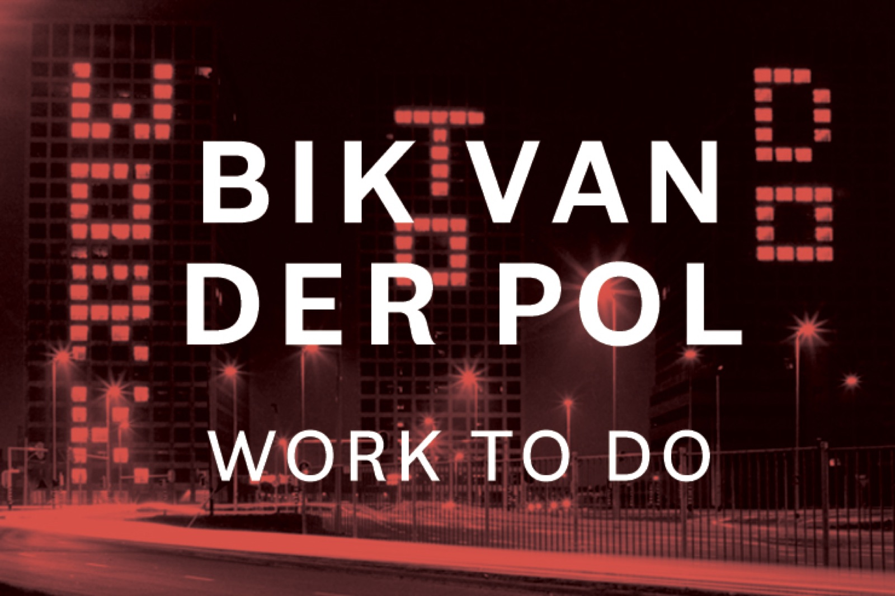
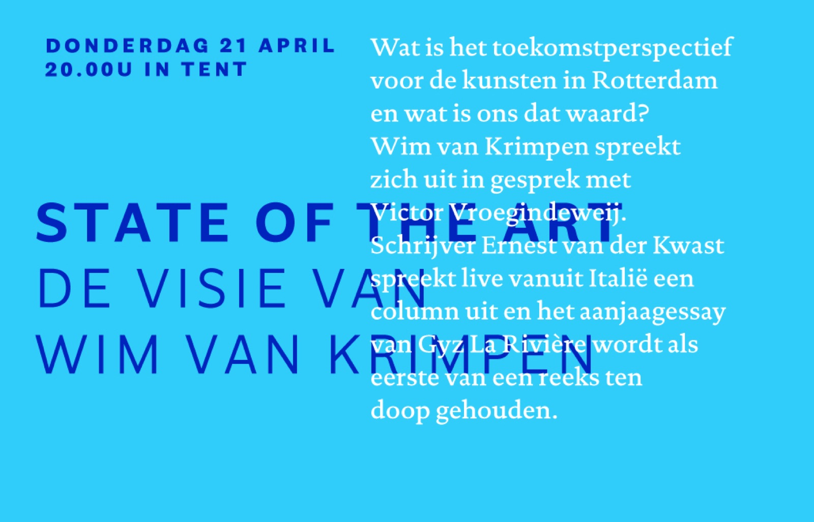
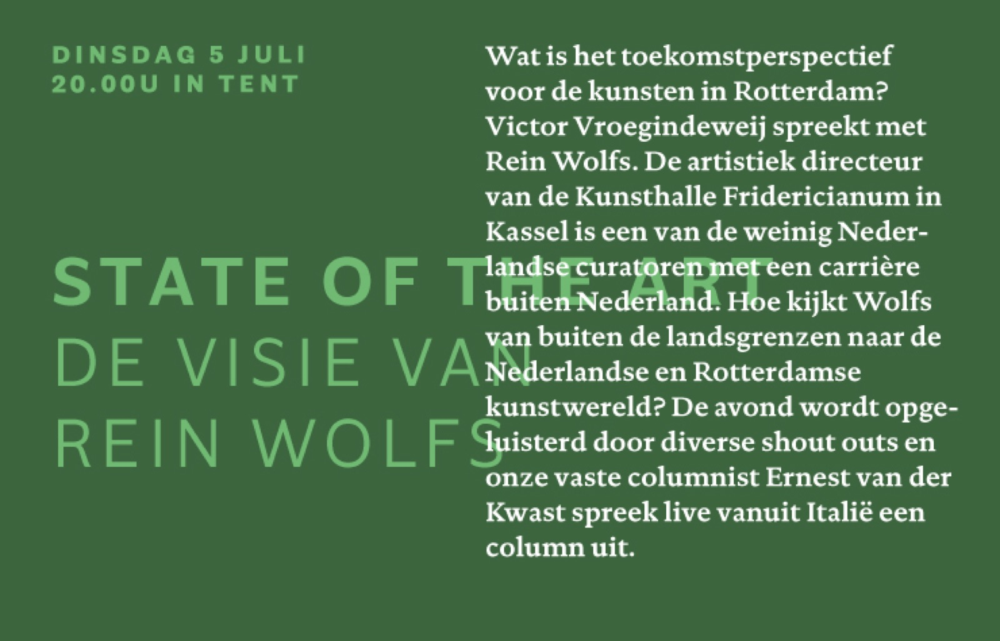
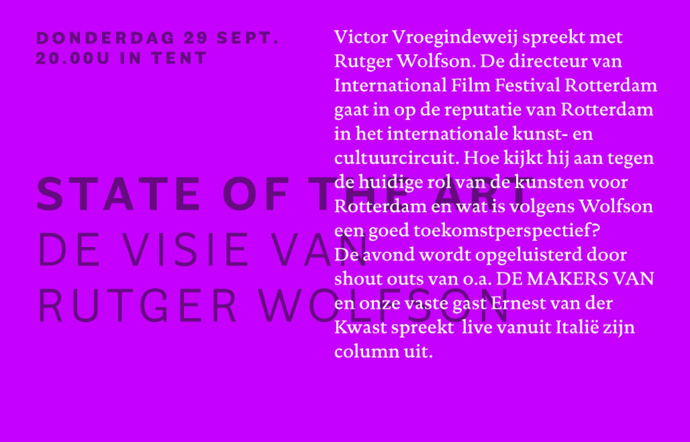
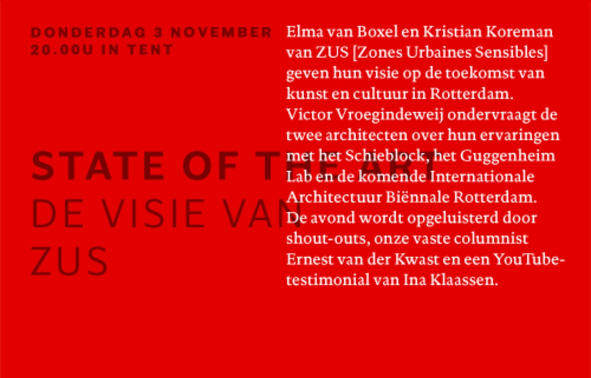
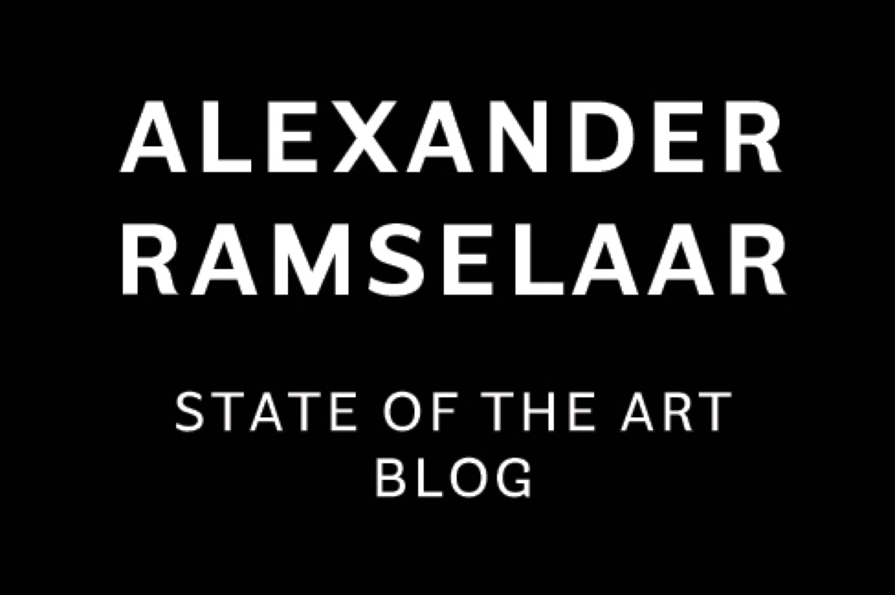
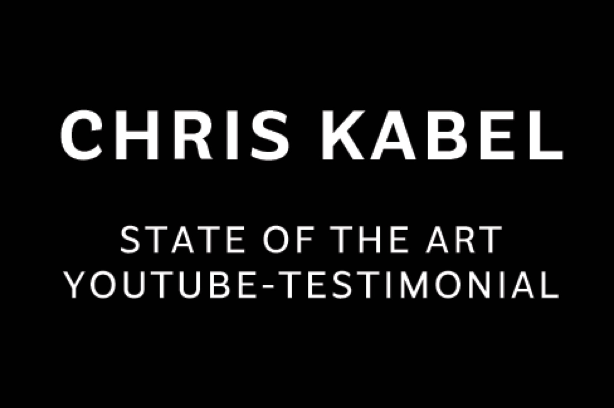
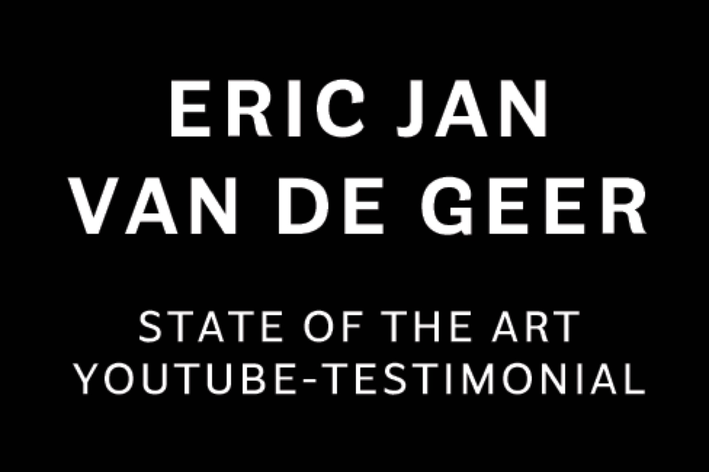
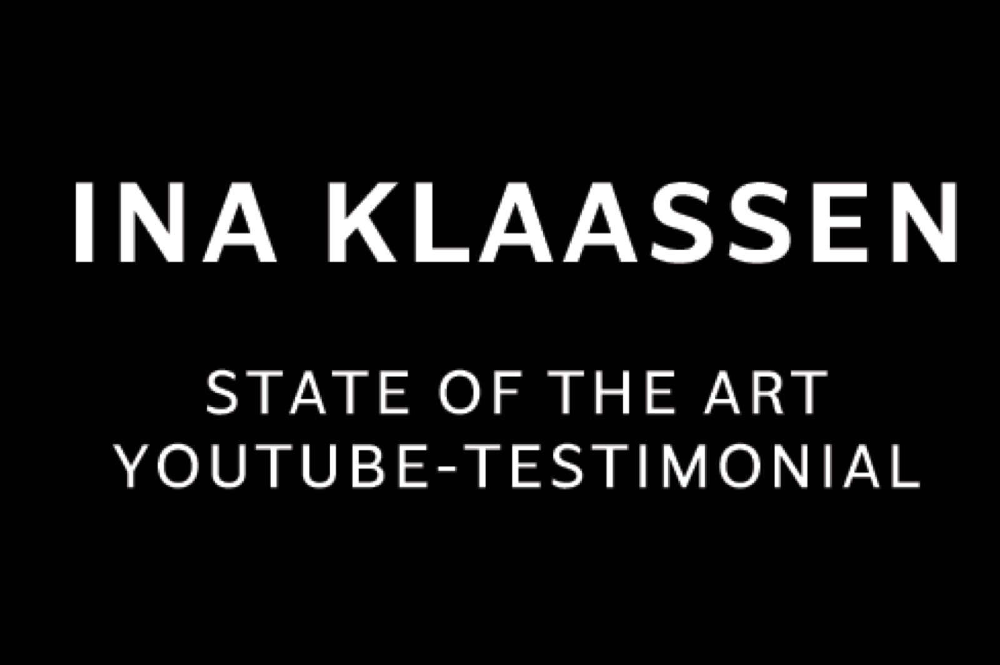